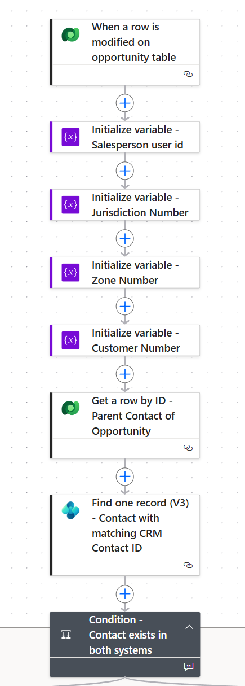
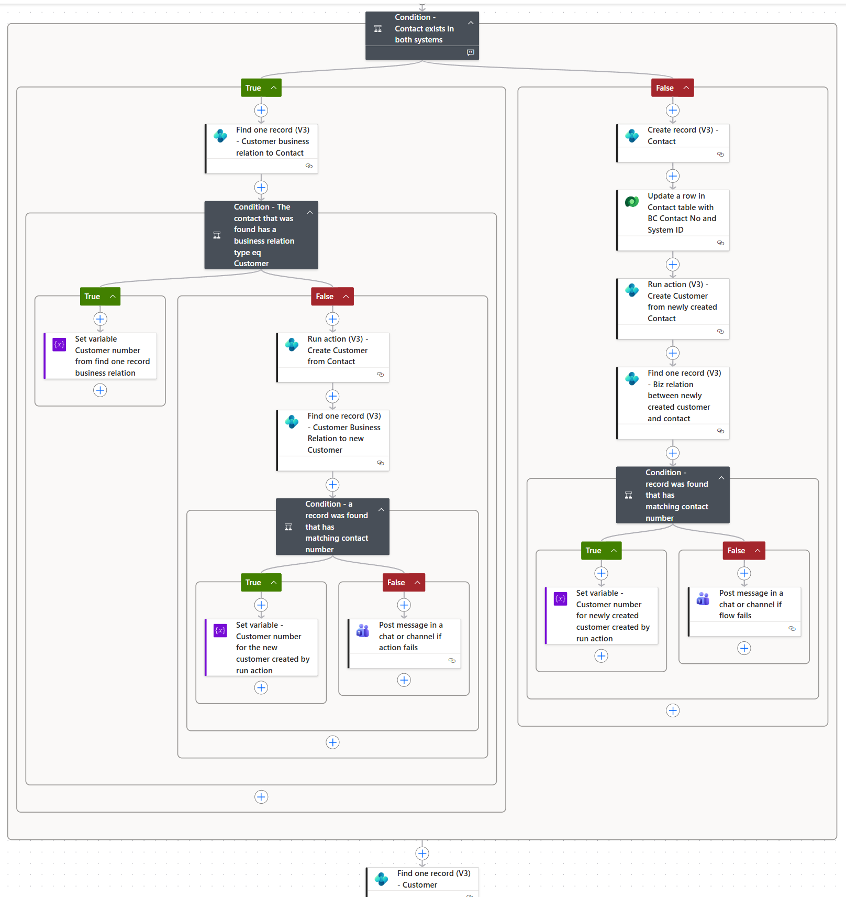
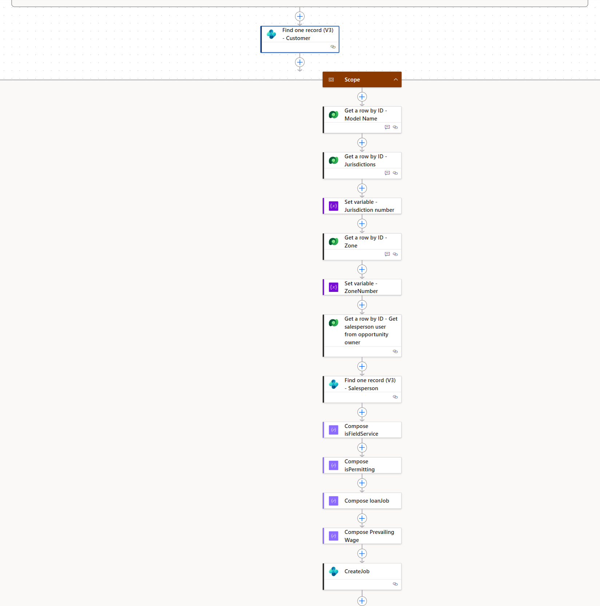
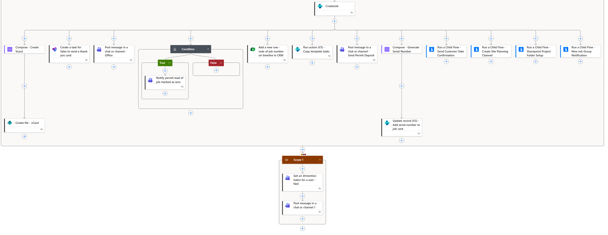

Project Summary
This automation connects Microsoft Sales Hub, Dataverse, Business Central, Outlook, Teams, and SharePoint into one end-to-end process triggered by a won Opportunity. It demonstrates cross-system integration, conditional logic, customer and job creation, team notifications, collaboration setup, and production-ready error handling.
Opportunity Won Trigger and Data Preparation
The flow starts when an Opportunity is marked as Won in Microsoft Sales Hub. It initializes key values such as salesperson, jurisdiction, zone, and customer identifiers, then uses those values to retrieve related Dataverse records needed later in the process. This prepares structured data for Business Central job creation.

Contact and Customer Relationship Logic
The flow evaluates whether the Opportunity contact exists in both Dataverse and Business Central. If the contact already exists, it checks for an existing customer business relationship. If missing, the flow creates the relationship and validates the result before continuing. If the contact does not exist in Business Central, the flow creates the contact, updates Dataverse with the Business Central contact number, and then creates the customer relationship.

Business Central Job Creation and Related Resources
After confirming the customer relationship, the flow creates the new job in Business Central and prepares related job resources. This section is wrapped in a Scope to group the job creation process and support centralized error handling. The flow also creates supporting items such as a Field Service planning channel, Outlook vCard, and SharePoint job folders.

Team Notifications and Error Handling
Final parallel branches notify key teams after the job setup process begins. The customer receives a thank-you email, the office is notified of the new win, accounting is reminded to invoice the permit deposit, and permitting is assigned the next task. If any action inside the job creation Scope fails, a follow-up action notifies IT with the flow run failure and relevant details.

Skills Demonstrated
Sales Hub automation, Dataverse triggers and lookups, Business Central integration, conditional branching, customer and job creation, SharePoint folder automation, Teams and Outlook notifications, Scope-based error handling, and cross-department workflow orchestration.